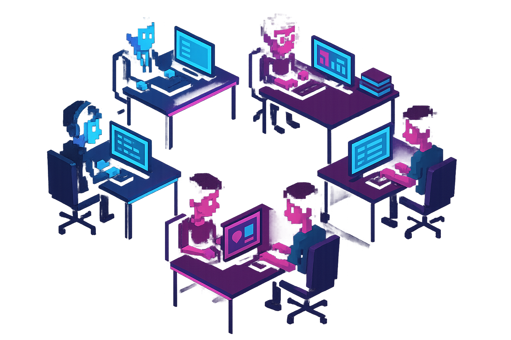
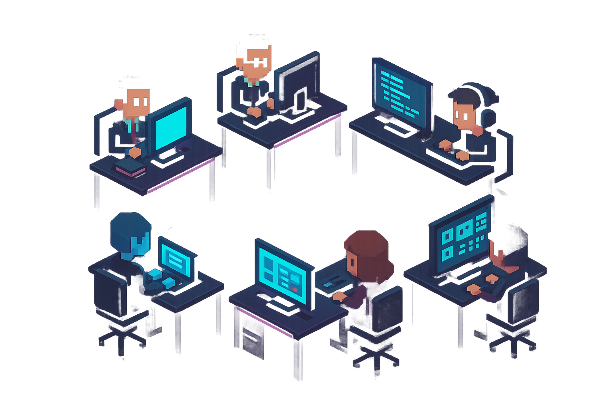

Isometric pixel art office scene, 16-32px style characters. Dark background (#0a0a0f). 6 AI agent characters sitting at individual workstations in a modern open-plan office. Each character has a distinct look: one in a suit (executive), one with glasses and books (researcher), one with headphones at a code terminal (developer), one typing a document (content writer), one reviewing a brand board (brand manager), one at a social media dashboard (social media). Neon cyan (#00f0ff) and magenta (#ff00aa) accent lighting throughout - glowing monitors, neon strip lights on desks, subtle purple (#9b59ff) ambient glow. Clean pixel art style inspired by VA-11 Hall-A and Hyper Light Drifter. No text. Transparent or very dark floor. The scene should feel alive but calm - a late-night AI office humming with productivity.Isometric pixel art office scene, 16-32px style characters. Dark background (#0a0a0f). 6 AI agent characters sitting at individual workstations in a modern open-plan office. Each character has a distinct look: one in a suit (executive), one with glasses and books (researcher), one with headphones at a code terminal (developer), one typing a document (content writer), one reviewing a brand board (brand manager), one at a social media dashboard (social media). Neon cyan (#00f0ff) and magenta (#ff00aa) accent lighting throughout - glowing monitors, neon strip lights on desks, subtle purple (#9b59ff) ambient glow. Clean pixel art style inspired by VA-11 Hall-A and Hyper Light Drifter. No text. Transparent or very dark floor. The scene should feel alive but calm - a late-night AI office humming with productivity.
{kind=link}
{kind=link}